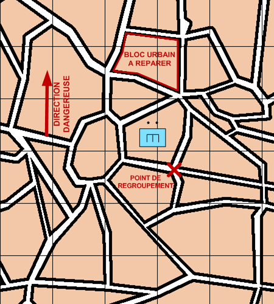

NIVEAU : Pion
ARME : GENIE
MISSION : Reparer
NIVEAU : Pion
ARME : GENIE
MISSION : Reparer
Schéma de modélisationRéparer |
Paramètres obligatoiresObjectif (parmi les suivants) Bloc Urbain Le bloc urbain à réparer. Objet L'objet à réparer. |
|
Paramètres optionnelsPosition de regroupementDirection Dangereuse : Orientation privilégiée des capteurs lors de bond ou de reconnaissance de points Limite gauche / limite droite |
||
 |
Fiches missions |  |